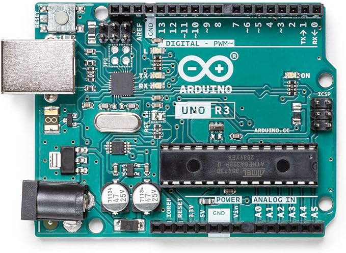
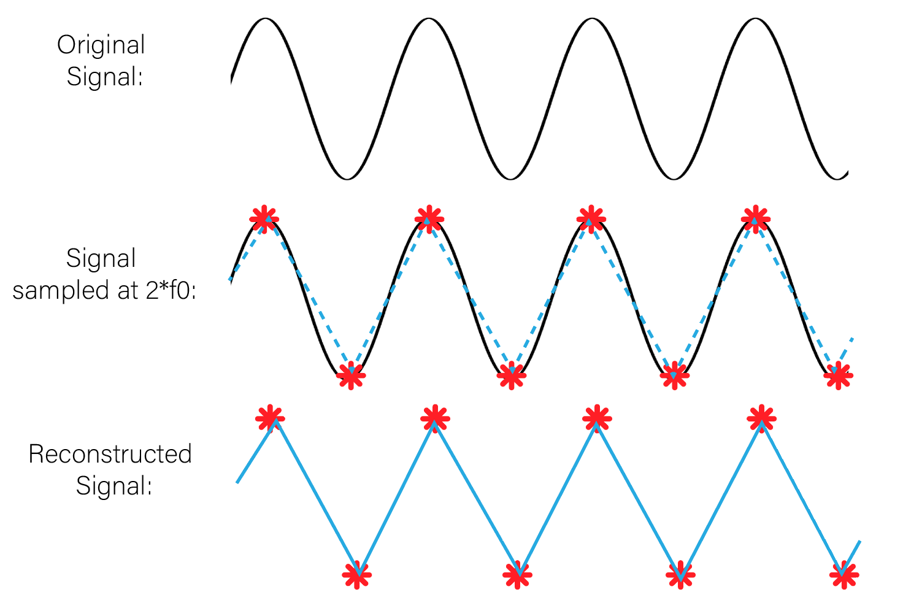
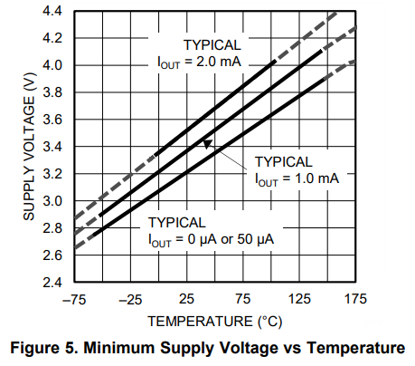

Els diferents microcontroladors tenen en comú els següents aspectes:
PWM significa "modulació de l'ample de banda", en anglès Pulse Width Modulation i és una forma d'aconseguir una sortida analògica a partir de diverses sortides digitals molt ràpides.
PWM es representa amb el símbol "~" tal com podem veure a la imatge següent d'un Arduino Uno:
Més amunt podem veure que els pins numeros 3, 5, 6, 9, 10 i 11 són PWM que són sortides analògiques de 8 bits, en el cas d'Arduino Uno Rev3, d'acord amb el fabricant, mentres que en el cas d'Arduino Uno Rev4 és de 12 bits, segons el fabricant, que l'anomena DAC, que vol dir Digital Analog Converter
Tenir 8 o 12 bits en un convertidor digital analògic o DAC tipus PWM fa que tinguem 28 o 210 nivells diferents de corrent, es a dir 256 nivells diferents o 2048 nivells diferents
Suposem que Arduino Uno Rev3 o Rev4 podem donar 5 volts com a màxim. Quina seria la resolució en milivolts de cada Arduino?
5 volts dividit entre 256 dona 0.01953125 volts = 19.53125 milivolts per arduino Rev3
5 volts dividit entre 2048 dona 0.00244140625 volts = 2.44140625 milivolts per arduino Rev4
Els milivolts anteriors són la resolució que aconseguim. Imaginem que volem regular la intensitat d'un LED amb un Arduino Uno Rev3 aconseguim menys fluid i amb graons més grans, és a dir canvis més bruscs perquè 256 canvis són menys que 2048 volts. A continuació veurem una imatge que representa com combinant moltes senyals digitals ràpidament sembla que generem un senyal analògi i això és la base del PWM.

Quan major és l'amplada del pols vol dir que major és el temps que la sortida digital està en voltatge alt, per exemple 5V i menys temps està a 0V, i per tant el promig de tots els polsos és més alt. En canvi si per exemple si cada pols és més estret a 5V vol dir que estarà més temps a 0V, i per tant el promig de tots els polsos és més baix. A la imatge de a dalt es pot veure com s'encendria un LED o un motor funcionaria a una velocitat del 10%, 30%, 50%, 90%. Quin persentatge del senyal canviara en un cas i en un altre?
A la taula a continuació veuras els valors per defecte de la freqüència PWM en Arduino Uno Rev3
| PIN de Sortida | Freqüència |
|---|---|
| PINS: 3, 9, 10, 11 | 490 Hz |
| PINS: 5 i 6 | 976 Hz |
Nota: La taula HTML anterior té una capçalera com un document HTML, però és diu thead, en comptes de head i és la primera filera de la taula. Té un cos anomenat tbody, en comptes de body i és la reta de la taula. La taula la defineix el tag table que agrupa thead y tbody. Totes les fileres tant del thead com del tbody es defineixen amb el tag tr, que vol dir table row. Dintre de thead hi ha elements individuals que són cel·les que pertanyen a la primera filera que s'anomenen th o table heading. En el table body hi ha també fileres tr, però dintre d'aquestes fileres els elements individuals han de ser td, que significa table data. per últim, s'han de tancar el table o body. Tots aquests elements es poden modificar amb CSS i fer la taula amb un estil propi
Les freqüencies baixes produeixen sorolls en els motors. Per tant, és preferible connectar motors als pins 5 i 6.
La freqüencia és la inversa del periòde, 976 Hz o cicles per segon correspo a un periòde de 1/976 segons, que són 1,024 milisegons
Apliquem el teorema de Nyquist que diu que hem de fer el doble de mostres com a mínim que la freqüencia màxima per aconseguir convertir un senyal contínu analògic en un senyal digital mostrejat segons la figura següent
Nyquist és important perquè si en el codi poso una freqüencia de mostreig de 20 Hz per un so no fucionarà perque la freqüencia mínima del so és 20 Hz i la màxima 20 KHz pel que refereix al so audible en humans. Això és perque agafes mostres massa grans i no podem veure pujades i baixades de la senyal.
A continuació veurem una taula comparativa sobre els microcontroladors Arduino UNo i ESP32S3 i el circcuit ha ADS1115
| Microcontrolador i o circuit | Número de bits(Nivells) | Voltatge |
|---|---|---|
| Arduino Uno | 10 (0-1023) | 0-5V, 0-3.3V |
| ESP32S3 | 12 (0-4095) | 0-3.3V |
| ADS1115 | 16 (0-65536) | 0-3.3V |
A continuació tenim un codi general que pot servir per moltissimes coses diferents i totes relaciones amb la capacitat que té l'arduino de llegir de 0 a 1023 en una entrada analògica, si fos un ESP32S3 lllegiria de 0 a 4095, i si fos un ADS1115 llegiria de 0 a 65536. Per què?
Els microxips i els microcrontoladors tenen transistors i els transistors només poden fer una cos, encendres o apagarse, és a dir 0 o 1, i cada bit és un 0 o un 1. Si tenim 10 bits en un ADC (Analog Digital Converter) significa que té 210 combinaions de 0 i 1, és a dir 1024 nivells diferents que numèricament van des del 0 al 1023.
Si tenim 12 bits en un ADC (Analog Digital Converter) significa que té 212 combinaions de 0 i 1, és a dir 4096 nivells diferents que numèricament van des del 0 al 4095. Ara justifiquem el número 65536 seria correcte si fos 216 com diu el sabricant, però al datasheet parla d'un nivell màxim de 8000h (Número hexadecimal que correspon a 32768) és a dir, són 15 bits utilitzables. Sempre s'ha de comprobar el datasheet o fulla de característiques del fabricant
int valor_ADC=0; //int significa "integer" o "valor enter numèric" (float seria floating point number o decimal, char sera un character o caracter de lletra de l'alfabet, string seria una cadena de caracters o paraula...
El més importanr és entendre que la primera paraula defineix el tpus de variable que tenim, en aquest cas enter). "valorADC" és un nom que triem
nosaltres per definir una variable, és a dir, un valor que no serà constant i que té inicialment un valor seu, si posem "int valor_ADC"; és a dir,
no posem que és = a 0 per defecte hauria de donar valor 0. Si jo volgues posar un potenciòmetre posaria "pot" i si volgues posar un LDR posaria ldr. Sempre
la primera línea és la definició de las variables. A vegades, abans de la primera línea necessitem carregar biblioteques.
voidsetup(){ //Sempre hi ha un "setup" o "funció de configuració" del microcontrolador en llenguatge Arduino que té un parentesis buit
perquè no té cap paràmetre o argument del qual depengui en molt casos. La paraula "void" serià l'equivalent a la paraula "function" en JavaScript.
També es diu "voidsetup" en Processing, perquè Arduino deriva de Processing el llenguatge Arduino. Posem un parentèsis per agrupar totes les
instruccions que volem executar una sola vegada perquè setup s'executa nomésal principi quan arranquem o encenem l'Arduino o microcontrolador.
Serial.begun(9600); //Serial s'escriu en majusculas perquè és una classe que és una part molt important del codi Arduino que antigament
era una classe de Processing i té un mètode que es fa servir en la sintaxi del punt, dot syntax, que consisteix en que jo quan escric un punt, estic
aplicant un mètode normalment a un objecte d'una sèrie i a vegades a una classe, per exemple aquí. El mètode begin connecta per al cable sèrie
l'ordinador amb l'Arduino i té només un paràmetre o argument, que és un número enter que correspon a la velocitat en bits7segon. Pel cas de l'Arduino
uno 9600 bits/segon o bauds, mentres que en ESP32S3 són 115200 bits/segon o bauds "Serial.begin(115200);". És molt important posar un ; al final de cada
instrucció per confirmar que ja ha acabat.
}
void loop(){ //És una funció que repeteix sense parar fins que desconecto físicament o poso un codi per aturar-ho.
valorADC=analogRead(AO); //La variable que hem creat abans que era 0 inicialment ara canviarà perquè la instucció
analogRead el que fa és llegir valors entre 0 i 1023 si és un Arduino uno, A0 és una de les 6 entrades analògiques
d'Arduino uno.
valorADC=analogRead(34); // La variable de valor 0 ara serà un valor entre 0 i 4095 perquè 34 és el numero de PIN d'un ESP32S3.
//ADC vol dir Analog Digital Converter, és a dir que convertim un valor analògic en digital (conertidor analògic digital)
//DAC vol dir Digital Analog Converter, és a dir el contrari que ADC,convertim digital a analògic com el PwM (Pulse with modlation) que vol dir mmodulació de l'ample de banda
//D'acord amb el datasheet o fulla de caracterísitques de ESP32S3
//Hi ha 20 entrades analògiques de 12bits mentres que en Arduino uno hi ha 6 entrades analògiques de 10 bits.
Serial.println(valor ADC); //Pintln significa que imprimeixi via serial el valor de ADC (0-1023, 0-4095)
delay(500);} //Espera 500 milisegons o mig segons per mostrar el resultat
Com podem veure a la foto de més amint d'arduino a la cantonada inferior dreta es troben els 6 ADCs o entrades analògiques amb les lletres d'A0 fins a A5, i a la part superior de l'arduino podem veure els pins que son els 6 DACs o sortides analògiques de tipus PWM que estan senyalaeds amb ~ (Pins 3, 5, 6, 9, 10, 11).
En la imatge següent podem veure un esquema de ESP32S3

Podem observar que a diferèndia d'Arduino Uno la gran majoria de pins son GPIO, que significa General Purpose Input Output, en català Pin d'Entrada i Sortida de Propòsit General, és a dir, que pot tenir moltes utilitats, entrada digital, sortida digital, entrada analògica, sortida analògica. Si volem veure un esquema dels pins podem escriure "pinout".
Alguns pins són RTC, que significa Real Time Clock, que és un rellotge intern que funciona mitjançant una pila interna que dona suficient energia perque vibri un cristall de quars que és el que compta el temps.
En el codi tenenim un pin 34 que es un pin intern que no veu l'usuari perque esta dins de la placa base fent la funció SPIQ segons el datasheet el GPIO34 corespon al pin fisic 39 per tant sempre hem de mirar el pinout oficial.
Els pins A0 fins A5 són entrades analógiques i allà podem connectar una série d'elements:
const int sensorPin= A0;
void setup()
{
Serial.begin(9600);
}
void loop()
{
int value = analogRead(sensorPin);
float millivolts = (value / 1023.0) * 5000;
float celsius = millivolts / 10;
Serial.print(celsius);
Serial.println(" C");
delay(1000); // Mirem aquest codi i quins valors donaria. Entre 0 i 500 graus, és a dir, no dona valors
negatius i no coincideix entre -55 i +150 graus amb resposta lineal mapejada.
}
El codi de més amunt funcionaria amb un sensor de temperatura LM35, però es podria adaptar per qualsevol sensor. Per què? Si soc un Arduino, els pins A0 - A5 només soc capaç de fer una cosa, llegir la senyal del sensor entre 0 i 1023. Mentresque en els pins PWM seria capaç d'escriure de 0 - 255
const int sensorPin = A0; significa que el valor és cons o constant, i que no vaciarà en tot el codi, int que és un variable que és de tipus integer o número enter, sensonPin és el nom que trio per identificar el pin anomenat A0 i podia haver triat qualsevol altre nom, com: SensorT, sensorTemperatura, sensorLM35... Per tant la instrucció sencera que fa? Estem donant un nom al pin A0 per identificar-lo i que sigui una constant a tot el codi que no pot variar perquè si varia, varia tot el número de pin
void setup() { Serial.begin(9600); } Tots els codis sempre tenen les mateixes parts, al principi es posarien les biblioteques necessaries, seguides de les variables que necessiten (en aquest cas SensorPin) i a continuació va el bloc o funció de onfiguració anomenada setup, el setup s'executa una sola vegada i Serial.begin(9600); el que fa és aplicar el mètode begin amb la sintaxi del punt (dot syntax) amb un argument o paràmetre que està entre parèntesis. Serial vol dir comunicació en sèrie a través d'un cable USB, 9600 és la velocitat en bits per segon a través del cable USB. En un ESP32S3 es comunica una velocitat més alta, en aquest cas 115200 bits per segon, i aquesta velocitat no només té que estar en el codi, sinó que ha de coincidir en el IDE o entorn de programació d'Arduino, concretament a la consola de sortida de comunicació sèrie. Si no ho faig poden sortir caràcters extranys quan premomel botó superior dret de comunicació sèrie. El punt i coma final és molt important perquè indica que ha acabat la instrucció.>/p>
Per finalitzar hi ha el codi principal o loop que es repeteix sense parar:
int value = analogRead(sensorPin); int és integer i només agafa números enters, value és el nom que vull posar per emmagazemar tots els valors que agafa l'Arduino. I com els emmagatzema? Amb la instrucció analogRead que llegeix de 0 a 1023 i un llegit, el sensor pin (el paràmetre) i els guarda dins de value
float millivolts = (value / 1023.0) * 5000; float sinifica floating point number, o número decimal en anglés, millivolts és el nom de la variable on emmagatzemem els millivolts reals que està generant el sensor de temperatura. Per què genera en millivolts? Perquè l'Arduino Uno funciona a 5V o a 5000mV, que passa si divideixo el valor entre 1023, que tinc que valor en tant per 1, i si a aquest valor el multipliquem per 5000, em donen 1023 valors diferents entre 0 i 5000
Posem diversos exemples:
Això passaria en tots els sensors del món. Pero com seria si fos un ESP32S3? Seria 3.3V i 4095, per tant aquests exemples serien:
Amb això aconseguiriem millor resolució o presició, és a dir, el termometre o sensor agafa més valors diferents (seria més precis). En aquest cas value/4095, sempre serà un número entre 0 i 1, ja que value sempre va entre 0 i 4095, i si el multiplico per 3300, tindre un número de 0 a 3300 millivolts.
float celsius = millivolts / 10; float demana un número decimal millivolts sempre donara entre 0 i 5000. Que passa si divideixo entre 10? Que converteix els millivolts en graus i van de 0 a 500 graus. Serial.print(celsius); aquest codi imprimeix a la pantalla el valor de la variable celsius que anira des de 0 fins a 500 graus. A continuació, posem Serial.println(" C"); que imprimeix una linea (println significa Print Line), i si ho posem entre cometas la C (" C") ho imprimeix tal qual a diferencia de si no posem cometes com celsius que apareix el valor de la variable, és a dir, és un número que canvia. Serial és una forma de comunicar-se a través del USB o Comunicació Sèrie, i en molts llenguatges de programació existeix la biblioteca "Serial" o la classe serial. Un llenguatge de programació és un conjunt de biblioteques, una bilioteca és un conjunt de classes, i una classe conté diferents funcions.
Per exemple, Arduino era i és encara una classe del llenguatge Processing, i s'utilitza molt més Arduino com a llenguatde de programació actualment. Si utilitzo processing i la biblioteca Arduino l'avantatge que tinc és que puc utilitzar totes les biblioteques de visió per ordinador, d'intel·ligencia artifial, de l'ordinador i fer aplicacions que només amb Arduino serien imposibles.
La imatge anterior procedeix de la fulla de característiques de LM35, i es veu que té una resposta lineal del voltatge i de la temperatura, de forma que a 2.9V ens donaria -55 graus i a 4.15V ens donaria 155 graus. Com fariem un codi de mapeig per això?
float temp = map (value,0,1023,2900,4150) float celsius = map (temp,2900,4150,-55,155)És un sensor de temperatura lineal que té 3 pins com es pot veure a la imatge següent:

A continuació tenim el gràfic de funcionament procedent del full de característiques
Per últim veurem el circuit físic d'arduino
Hem vist que a 2100 milivolts i fin a 4350 milivolts la resposta de LM35 és lineal i va des de 55 sota zero fins a 150 sobre zero
Com ho traduim a codi?
Primer hem de entendre que arduino la seva entrada analògica A0 (o qualsevol fins A5) és capaç de llegir voltatge i sempre comença amb zero i acaba en 5 volts. Com hi ha 1024 nivells diferents la resolució és 5000/1024=4, 88 milivolts es a dir cada nivell augmenta 4,88 milivolts. és a dir la resolucó en milivolts és 4.88 (5000 són milivolts perque arduino uno funciona amb 5 volts).
Com començem a mesurar temperatures entre 2900 milivolts i 4100 milivolts hem de saber a que correspon aquests 2 numeros en base 1024, (2900/5000)*1024=594 nivell respecte 1024 (4100/5000)*1024=840 nivell respecte a 1024
Sabent això com sería el mapeig?
int analogValue = analogRead (A0);
float volt = analogValue*(5000/1024);
float temp = map(analogValue, 0, 1023, -55, 150); ÉS INCORRECTE
float temp = map(analogValue, 594, 840, -55, 150); ÉS CORRECTE